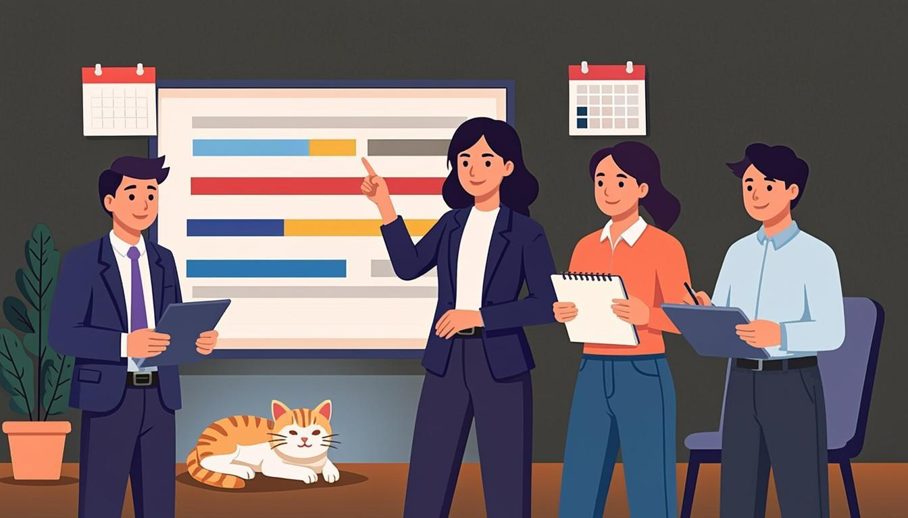

Warm-up
10 minroadmaps · decisions · your next month🎧 Listen to the questions
❓ Three questions — click a card to open the sentence starters
Listening — The Roadmap Meeting
12 minaudio + comprehension
🧩 Before you listen: 10 key words
Click a word — a definition and an example will open. The Russian gloss is there to check your understanding. Listen to the recording of all ten words.
🎧 Track 1 — The Roadmap Meeting
🌍 Extension — BBC 6 Minute English: Sharing the road with driverless cars
From the yearly plan: Sharing the road with driverless cars ↗
Task: listen and note 2 future forms — one with will + infinitive, one with going to. What will change in cities?
Reading — Dana's December Memo
8 mintext + future spottingThe December Memo
From: Dana · To: everyone · Subject: December without panic
Team, here is the December plan. The winter update is coming out on 12 December. I know we first said January, but the beta results are strong and the game is going to be ready early — the numbers say so, not my optimism.
Two promises from me. One: I will not add any new features to this release — the scope stays frozen. Two: I will answer every partner email this week, because our new partner is visiting the studio next Monday, and the office is going to look extra clean.
What I need from you. Tom is running the final regression cycle from 3 to 7 December — every test case, both platforms. Priya is finishing the trailer art by Friday. And when the build is ready, QA will send the report directly to me — no "we'll look at it later".
This time next month, this update will be history and you will all be heroes. Thank you, and back to work.
🌍 Extension — The Guardian: Technology
From the yearly plan — pick any fresh tech news: theguardian.com/technology ↗
Find the future forms (will, going to, present continuous with future meaning) — 3 examples minimum. Which one did the journalist choose for the headline?
Grammar — Will vs Going To vs Present Continuous
15 minrules + 4 exercisesWILL — decide now, predict now
- A decision at the moment of speaking: The trailer? We'll cut it this week.
- Predictions and opinions: Players will find the secret in a day.
- Promises and offers: The update will not break your saves — I promise.
- Signal words: I think, probably, maybe, I'm sure
GOING TO — planned before, or evidence now
- An intention made earlier: We are going to keep this meeting short.
- A prediction with visible evidence: At this speed we are going to pass 50,000 wishlists.
- Something you can already see coming: Look at those clouds — it is going to snow.
PRESENT CONTINUOUS — already in the calendar
- A personal arrangement with time and people: We are presenting the roadmap to our partner on Thursday.
- Diaries, tickets, booked rooms: The focus group is testing the beta on Saturday. I am moving the launch — it's decided.
- Compare: I'll meet her tomorrow (offer/decision now) vs I'm meeting her tomorrow (it's in the calendar).
⚙️ Mini-table — which future, and why?
| Sentence | Why? |
|---|---|
| We'll cut the trailer this week. | Decided in the meeting, at the moment of speaking — will. |
| We are going to keep this short. | An intention made before the meeting — going to. |
| We are presenting the roadmap on Thursday. | Fixed in the calendar with people and time — Present Continuous. |
| The build will not break your saves. | A promise about the future — will. |
| We are going to pass 50,000 wishlists. | Evidence you can see now (the numbers) — going to. |
| The office is going to look extra clean. | A clear sign of the result — going to. |
🎬 Video — BBC 6 Minute Grammar: How to talk about the future (6 min)
🔊 Shadowing — speak along with the speaker
Track A — decisions and promises (will), Track B — plans and arrangements (going to + Present Continuous). Listen to a sentence → repeat it out loud in the pause. Two loops per track.
Grammar → Speaking — the main section of the lesson
10 mingoal: three futures in live speech🎙 Round 1 — Three Futures about One Plan the plan's drill
Take one work task and say it three times, changing the future: first will (you decide right now), then going to (it was your intention), then Present Continuous (it is booked in the calendar). Model: I will look into it → I am going to prototype it → I am presenting it on Friday. Do the same with your real task. 90 seconds.
🎙 Round 2 — Roadmap in Three Tenses release plan
Present a small release or study plan (your project, your QA course, your ski season) in 5–6 sentences. Requirement: each future form at least once — a decision, a plan with evidence, and one fixed arrangement. 120 seconds.
🩹 Round 3 — Correction Sprint (roadmap edition)
Five sentences with typical future mistakes — they sound like a real project chat. Correct each one out loud and explain why. Click a card to see the fix.
⚡ Speed Drill — a situation every 5 seconds
Open a card and instantly say a true sentence about your work or study. Choose the future first: is it born now, planned before, or in the calendar?
Writing — your week in three columns
5 min40–80 wordsModel answer — open it after your own version
My week in three futures. Will (deciding now): I'll try the new bug-tracking template on Monday, and I'll ask Tom to check my test cases. Going to (planned before): I'm going to finish the regression module of my QA course this week — the deadline is on Sunday. Fixed in the calendar: I'm running my first solo regression cycle on Thursday, and on Saturday I'm meeting my study group at the library. Three columns, no panic.
Homework
≤ 30 minutes in total🧑🏫 Teacher notes
Goal: the student splits "the future" into three conscious choices — will (deciding/predicting now), going to (planned before or evidence now) and Present Continuous (fixed arrangement) — and stops using one form for everything.
Suggested flow: Warm-up: collect answers and ask "decided now, planned before, or in the calendar?" after each → Listening: the roadmap meeting; second pass hunts one example of each form → Reading: label every future in Dana's memo (8 forms) → Grammar: the decision table is the heart; the video consolidates → Speaking: Round 1 is the module's key drill; keep the 5-second rule visible.
Success criteria: Round 1 — three clean transformations of one task, no pauses over 3 seconds; Round 2 — all three forms present and justified; Round 3 — 5 corrections with reasons.
Error pocket: will to + infinitive · using Present Simple for personal arrangements (I go to the dentist tomorrow) · going to for decisions born mid-sentence · promises in going to instead of will.
Threads: the memo's frozen scope returns from Lesson 11; the new partner appears again in Lesson 16 (Pitch Day — she is presenting to him); Tom's promise "the update will not break your saves" closes the race-condition storyline of Lesson 10; the three-column week plan is the Writing genre of the module.